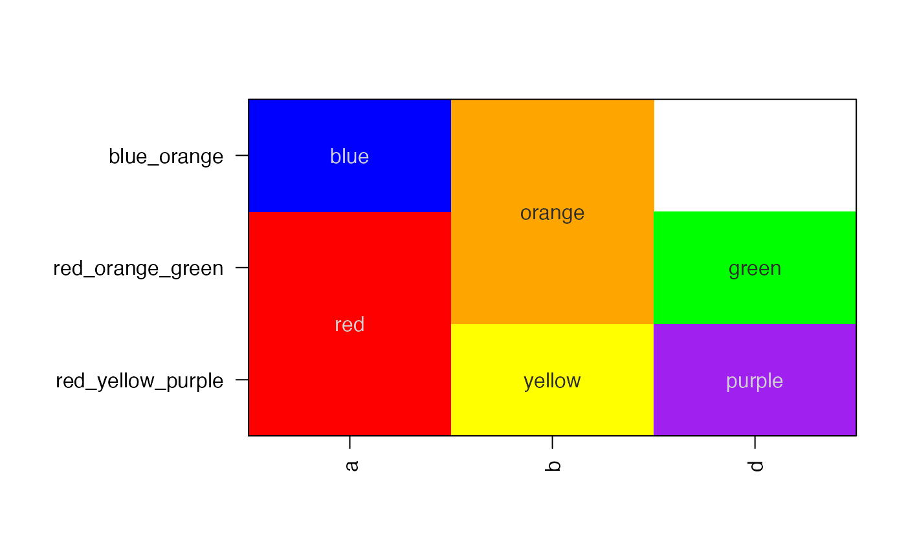

Paste data.frame rows into a character vector, optionally removing empty fields in order to avoid delimiters being duplicated.
pasteByRow( x, sep = "_", na.rm = TRUE, condenseBlanks = TRUE, includeNames = FALSE, sepName = ":", blankGrep = "^[ ]*$", verbose = FALSE, ... )
| x | data.frame, matrix, or tibble |
|---|---|
| sep | character separator to use between columns |
| na.rm | logical whether to remove NA values, or include them as "NA" |
| condenseBlanks | logical whether to condense blank or empty values without including an extra delimiter between columns. |
| includeNames | logical whether to include the colname delimited prior to the value, using sepName as the delimiter. |
| sepName | character, only relevant when includeNames=TRUE, this value becomes the delimiter. |
| blankGrep | character grep string used to recognize blank entries, by default any field containing no text, or only spaces, is considered a blank entry. |
| verbose | logical whether to print verbose output. |
| ... | additional arguments are ignored. |
character vector of length nrow(x).
This function is intended to paste data.frame (or matrix, or tibble) values for each row of data. It differs from using apply(x, 2, paste) in that it handles factors without converting to integer factor level numbers. It also by default removes blank or empty fields, preventing the delimiter from being included multiple times, per the condenseBlanks parameter. Lastly, it is notably faster than apply, by means of running paste() on each column of data, making the output vectorized, and scaling rather well for large data.frames.
The output can also include name:value pairs, which can make the output data more self-describing in some circumstances. That said, the most basic usefulness of this function is to create row labels.
Other jam string functions:
asSize(),
breaksByVector(),
cPasteSU(),
cPasteS(),
cPasteUnique(),
cPasteU(),
cPaste(),
fillBlanks(),
formatInt(),
gsubOrdered(),
makeNames(),
mixedOrder(),
mixedSortDF(),
mixedSorts(),
mixedSort(),
mmixedOrder(),
nameVectorN(),
nameVector(),
padInteger(),
padString(),
pasteByRowOrdered(),
tcount(),
ucfirst(),
uniques()
# create an example data.frame a1 <- c("red","blue")[c(1,1,2)]; b1 <- c("yellow","orange")[c(1,2,2)]; d1 <- c("purple","green")[c(1,2,2)]; df2 <- data.frame(a=a1, b=b1, d=d1); df2;#> a b d #> 1 red yellow purple #> 2 red orange green #> 3 blue orange green# the basic output pasteByRow(df2);#> 1 2 3 #> "red_yellow_purple" "red_orange_green" "blue_orange_green"# Now remove an entry to show the empty field is skipped df2[3,3] <- "";#> Warning: invalid factor level, NA generatedpasteByRow(df2);#> 1 2 3 #> "red_yellow_purple" "red_orange_green" "blue_orange"# the output tends to make good rownames rownames(df2) <- pasteByRow(df2); # since the data.frame contains colors, we display using # imageByColors() par("mar"=c(5,10,4,2)); imageByColors(df2, cellnote=df2);